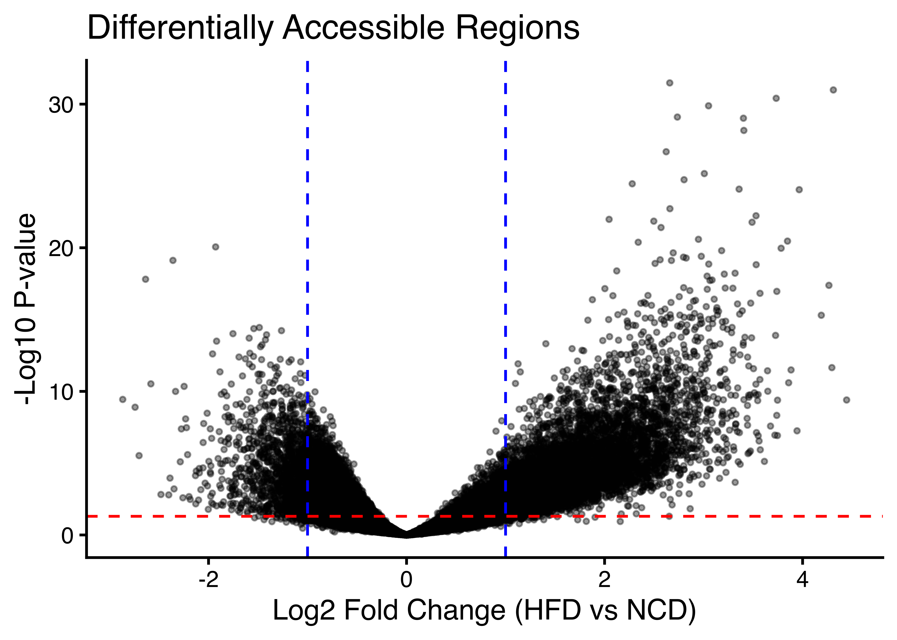
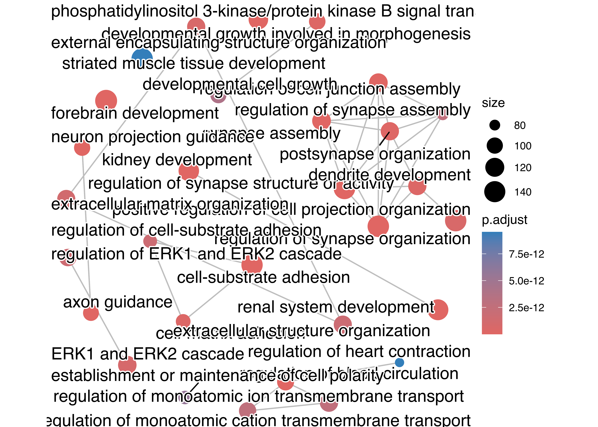

# hide this code chunk#| echo: false#| message: false# defines the se functionse <-function(x) {sd(x, na.rm =TRUE) /sqrt(length(x))}#load these packages, nearly always neededlibrary(tidyverse)
── Attaching core tidyverse packages ──────────────────────── tidyverse 2.0.0 ──
✔ dplyr 1.2.1 ✔ readr 2.2.0
✔ forcats 1.0.1 ✔ stringr 1.6.0
✔ ggplot2 4.0.3 ✔ tibble 3.3.1
✔ lubridate 1.9.5 ✔ tidyr 1.3.2
✔ purrr 1.2.2
── Conflicts ────────────────────────────────────────── tidyverse_conflicts() ──
✖ dplyr::filter() masks stats::filter()
✖ dplyr::lag() masks stats::lag()
ℹ Use the conflicted package (<http://conflicted.r-lib.org/>) to force all conflicts to become errors
Show the code
# sets maize and blue color schemecolor_scheme <-c("#00274c", "#ffcb05")
Purpose
This script analyses the results from a DESeq2 and MEME analysis of GSE236575. The purpose of this analysis is to identify differentially expressed regions and enriched motifs in that dataset. See the README.md file in this folder for details on the generation of these files
Raw Data
The DESeq2 analysis was done on the remote server (see main.nf for commands). This script loads in both those results and the raw counts that were used for that analysis.
Show the code
library(readr) #loads the readr packagedeseq.filename <-"results/deseq2/deseq2_results.txt"#input file(s)deseq.counts.filename <-"results/deseq2/deseq2_normalized_counts.txt"deseq.results <-read_tsv(deseq.filename) #reads in the data
Rows: 61619 Columns: 10
── Column specification ────────────────────────────────────────────────────────
Delimiter: "\t"
chr (2): chr, peak_id
dbl (8): start, end, baseMean, log2FoldChange, lfcSE, stat, pvalue, padj
ℹ Use `spec()` to retrieve the full column specification for this data.
ℹ Specify the column types or set `show_col_types = FALSE` to quiet this message.
These data can be found in /Users/davebrid/Documents/GitHub/CushingAcromegalyStudy/external-datasets/snATACseq/GSE236575 in a file named results/deseq2/deseq2_results.txt. This input file was most recently updated on 2026-05-06. This script was most recently updated on Mon May 11 12:11:19 2026.
Analysis
There were 61619 regions analyzed in this dataset. Of these, 14872 (24.1354128%) were found to be significantly differentially accessible comparing the NCD to HFD adipocytes at an FDR of 0.05. Of those significant regions, 8612 (57.9074771%) were upregulated in HFD adipocytes and (42.0925229%) were more accessible in NCD adipocytes.
Out of the differentially regulated subset, the HFD adipocytes had an average log2 fold change of 1.5394525 +/- 0.0065426, while the NCD adipocytes had an average log2 fold change of -0.817636 +/- 0.0037877.
Annotation to known genes
Show the code
library(ChIPseeker)
ChIPseeker v1.48.0 Learn more at https://yulab-smu.top/contribution-knowledge-mining/
Please cite:
Qianwen Wang, Ming Li, Tianzhi Wu, Li Zhan, Lin Li, Meijun Chen, Wenqin
Xie, Zijing Xie, Erqiang Hu, Shuangbin Xu, Guangchuang Yu. Exploring
epigenomic datasets by ChIPseeker. Current Protocols. 2022, 2(10): e585
Show the code
library(GenomicRanges)
Loading required package: stats4
Loading required package: BiocGenerics
Loading required package: generics
Attaching package: 'generics'
The following object is masked from 'package:lubridate':
as.difftime
The following object is masked from 'package:dplyr':
explain
The following objects are masked from 'package:base':
as.difftime, as.factor, as.ordered, intersect, is.element, setdiff,
setequal, union
Attaching package: 'BiocGenerics'
The following object is masked from 'package:dplyr':
combine
The following objects are masked from 'package:stats':
IQR, mad, sd, var, xtabs
The following objects are masked from 'package:lubridate':
second, second<-
The following objects are masked from 'package:dplyr':
first, rename
The following object is masked from 'package:tidyr':
expand
The following object is masked from 'package:utils':
findMatches
The following objects are masked from 'package:base':
expand.grid, I, unname
Loading required package: IRanges
Attaching package: 'IRanges'
The following object is masked from 'package:lubridate':
%within%
The following objects are masked from 'package:dplyr':
collapse, desc, slice
The following object is masked from 'package:purrr':
reduce
Loading required package: Seqinfo
Show the code
library(TxDb.Mmusculus.UCSC.mm10.knownGene)
Loading required package: GenomicFeatures
Loading required package: AnnotationDbi
Loading required package: Biobase
Welcome to Bioconductor
Vignettes contain introductory material; view with
'browseVignettes()'. To cite Bioconductor, see
'citation("Biobase")', and for packages 'citation("pkgname")'.
Attaching package: 'AnnotationDbi'
The following object is masked from 'package:dplyr':
select
Show the code
library(org.Mm.eg.db)
Show the code
# BED files from main.nf use UCSC-style chr-prefixed naming (chr1, chrM, ...)# so deseq.results$chr is already "chr1" etc. — no extra prefixing needed.hfd.peaks <- deseq.results |>filter(padj<0.05, log2FoldChange>0)hfd.gr <-with(hfd.peaks, GRanges(seqnames=chr, ranges=IRanges(start+1, end))) # 0-based BED -> 1-based GRangestxdb <- TxDb.Mmusculus.UCSC.mm10.knownGenehfd.annot <-annotatePeak(hfd.gr, TxDb=txdb, tssRegion=c(-2000, 500), annoDb="org.Mm.eg.db")
>> preparing features information... 2026-05-11 12:11:24
>> Using Genome: mm10 ...
>> identifying nearest features... 2026-05-11 12:11:24
>> calculating distance from peak to TSS... 2026-05-11 12:11:25
>> assigning genomic annotation... 2026-05-11 12:11:25
>> Using Genome: mm10 ...
>> Using Genome: mm10 ...
>> adding gene annotation... 2026-05-11 12:11:33
'select()' returned 1:many mapping between keys and columns
These 8612 chromatin regions that were differentially opened by HFD were annotated as closest to 4632 unique genes, whereas the 6260 regions more accessible in NCD were annotated as closest to 3560 unique genes.
Volcano Plots of Regions
Show the code
library(ggplot2)library(ggrepel)# Join on chromosome AND end so peaks on different chromosomes can't collide.# all.ann_df$seqnames == deseq.results$chr; all.ann_df$end == deseq.results$end.deseq.results.annot <- deseq.results |>left_join(all.ann_df, by=c("chr"="seqnames", "end"="end"))ggplot(deseq.results.annot, aes(x=log2FoldChange, y=-log10(pvalue))) +geom_point(alpha=0.4,size=1) +xlab("Log2 Fold Change (HFD vs NCD)") +ylab("-Log10 P-value") +ggtitle("Differentially Accessible Regions") +#ggrepel::geom_text_repel(# data = deseq.results.annot |># filter(padj < 0.05 & abs(log2FoldChange) > 0.5) |># arrange(padj) |> head(10),# aes(label = SYMBOL), size = 5, max.overlaps = Inf) +geom_hline(yintercept=-log10(0.05), linetype="dashed", color="red") +geom_vline(xintercept=c(-1, 1), linetype="dashed", color="blue") +theme_classic(base_size=16)

GSEA Analysis of nearest genes
Show the code
library(clusterProfiler)
clusterProfiler v4.20.0 Learn more at https://yulab-smu.top/contribution-knowledge-mining/
Please cite:
S Xu, E Hu, Y Cai, Z Xie, X Luo, L Zhan, W Tang, Q Wang, B Liu, R Wang,
W Xie, T Wu, L Xie, G Yu. Using clusterProfiler to characterize
multiomics data. Nature Protocols. 2024, 19(11):3292-3320
Attaching package: 'clusterProfiler'
The following object is masked from 'package:AnnotationDbi':
select
The following object is masked from 'package:IRanges':
slice
The following object is masked from 'package:S4Vectors':
rename
The following object is masked from 'package:purrr':
simplify
The following object is masked from 'package:stats':
filter
enrichplot v1.32.0 Learn more at https://yulab-smu.top/contribution-knowledge-mining/
Please cite:
Guangchuang Yu, Li-Gen Wang, Yanyan Han and Qing-Yu He.
clusterProfiler: an R package for comparing biological themes among
gene clusters. OMICS: A Journal of Integrative Biology. 2012,
16(5):284-287
Show the code
emapplot(pairwise_termsim(hfd.gobp))

Show the code
#transfaclibrary(msigdbr)
Gene Transcription Regulation Database
Show the code
gtrd <-msigdbr(db_species="MM",species ="Mus musculus",subcollection="GTRD")hfd.gobp.gtrd <-enricher(unique(hfd.ann_df$SYMBOL), # your ENTREZ or SYMBOL listTERM2GENE = gtrd[, c("gs_name", "gene_symbol")])dotplot(hfd.gobp.gtrd, showCategory=20) +ggtitle("GTRD Enrichment")
Tests the sensitization hypothesis from results/motif_analysis/SUMMARY.md: do HFD-opened peaks contain an enriched fraction of pioneer-factor + GR composite enhancers? These would be candidate sites where HFD-driven chromatin remodeling licenses GR binding that would otherwise be inaccessible.
Inputs come from the COMPOSITE_MOTIF_SCAN Nextflow process, which uses FIMO to scan HFD-specific and shared peak FASTAs against JASPAR 2024 motifs for FOXA1, FOXA2, CEBPA, CEBPB, FOXO1, and NR3C1.
Rows: 6900 Columns: 8
── Column specification ────────────────────────────────────────────────────────
Delimiter: "\t"
chr (1): peak
dbl (7): MA0102.5, MA0113.4, MA0148.5, MA0466.4, MA0480.3, MA2323.1, MA2327.1
ℹ Use `spec()` to retrieve the full column specification for this data.
ℹ Specify the column types or set `show_col_types = FALSE` to quiet this message.
Rows: 53397 Columns: 8
── Column specification ────────────────────────────────────────────────────────
Delimiter: "\t"
chr (1): peak
dbl (7): MA0102.5, MA0113.4, MA0148.5, MA0466.4, MA0480.3, MA2323.1, MA2327.1
ℹ Use `spec()` to retrieve the full column specification for this data.
ℹ Specify the column types or set `show_col_types = FALSE` to quiet this message.
Show the code
# JASPAR ID -> friendly TF name. PGR motifs are included as GR-class proxies# because NR3C1 (MA0113.4) is often pruned from JASPAR's non-redundant subset# due to motif similarity with PGR/AR. PGR's IR3 motif is biochemically# essentially identical to GR's, so we treat PGR signal as has_gr.motif_map <-c("MA0148.5"="FOXA1","MA0047.5"="FOXA2","MA0466.4"="CEBPB","MA0102.5"="CEBPA","MA0480.3"="FOXO1","MA0113.4"="NR3C1","MA2327.1"="PGR_h","MA2323.1"="PGR_m")rename_motif_cols <-function(df) {names(df) <-ifelse(names(df) %in%names(motif_map), motif_map[names(df)], names(df)) df}hfd <-rename_motif_cols(hfd.motifs)shared <-rename_motif_cols(shared.motifs)# Classify peaks by presence of pioneer/cooperator and GR motifs.# A motif is "present" if FIMO found >= 1 occurrence within the 500-bp peak window.classify_peaks <-function(df) { cols <-names(df) has <-function(tf) if (tf %in% cols) df[[tf]] >0elserep(FALSE, nrow(df)) df$has_foxa <-has("FOXA1") |has("FOXA2") df$has_cebp <-has("CEBPA") |has("CEBPB") df$has_foxo <-has("FOXO1")# GR-class: NR3C1 directly, or PGR (human/mouse) as IR3 proxy df$has_gr <-has("NR3C1") |has("PGR_h") |has("PGR_m") df$foxa_gr <- df$has_foxa & df$has_gr df$cebp_gr <- df$has_cebp & df$has_gr df$foxo_gr <- df$has_foxo & df$has_gr df$any_pioneer <- df$has_foxa | df$has_cebp | df$has_foxo df$any_pioneer_gr <- df$any_pioneer & df$has_gr df}hfd.c <-classify_peaks(hfd)shared.c <-classify_peaks(shared)
Co-occurrence Fisher tests
Is the rate of pioneer+GR co-occurrence enriched in HFD-opened peaks vs the shared background? A significant odds ratio > 1 means HFD-opened chromatin disproportionately contains composite enhancers — the direct prediction of the pioneer-mediated sensitization model.
Gene annotation of candidate sensitizing enhancers
For HFD-opened peaks containing both a pioneer motif and a GR motif, annotate to the nearest TSS — these are candidate genes whose chromatin opening under HFD may license potentiated GR binding.
Show the code
parse_peaks_to_gr <-function(peak_ids) { m <-str_match(peak_ids, "^(.+):(\\d+)-(\\d+)$")GRanges(seqnames = m[, 2],ranges =IRanges(start =as.integer(m[, 3]) +1, end =as.integer(m[, 4])) )}annotate_composite <-function(df, field, label) { peaks <- df %>%filter(.data[[field]]) %>%pull(peak)if (length(peaks) ==0) return(tibble()) gr <-parse_peaks_to_gr(peaks) ann <-annotatePeak( gr,TxDb = TxDb.Mmusculus.UCSC.mm10.knownGene,tssRegion =c(-2000, 500),annoDb ="org.Mm.eg.db",verbose =FALSE )as.data.frame(ann) %>%mutate(composite = label) %>%arrange(abs(distanceToTSS))}foxa_gr.ann <-annotate_composite(hfd.c, "foxa_gr", "FoxA + GR")
>> Using Genome: mm10 ...
>> Using Genome: mm10 ...
>> Using Genome: mm10 ...
'select()' returned 1:1 mapping between keys and columns
>> Using Genome: mm10 ...
>> Using Genome: mm10 ...
>> Using Genome: mm10 ...
'select()' returned 1:1 mapping between keys and columns
Top candidate genes — FoxA + GR composite peaks
FoxA1 is the canonical GR pioneer in steroid-responsive tissues. Genes near FoxA+GR composite enhancers in HFD-opened chromatin are the highest-priority candidates for HFD-driven GR sensitization.